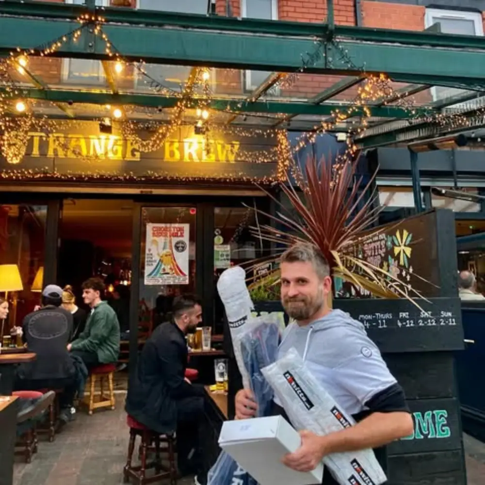
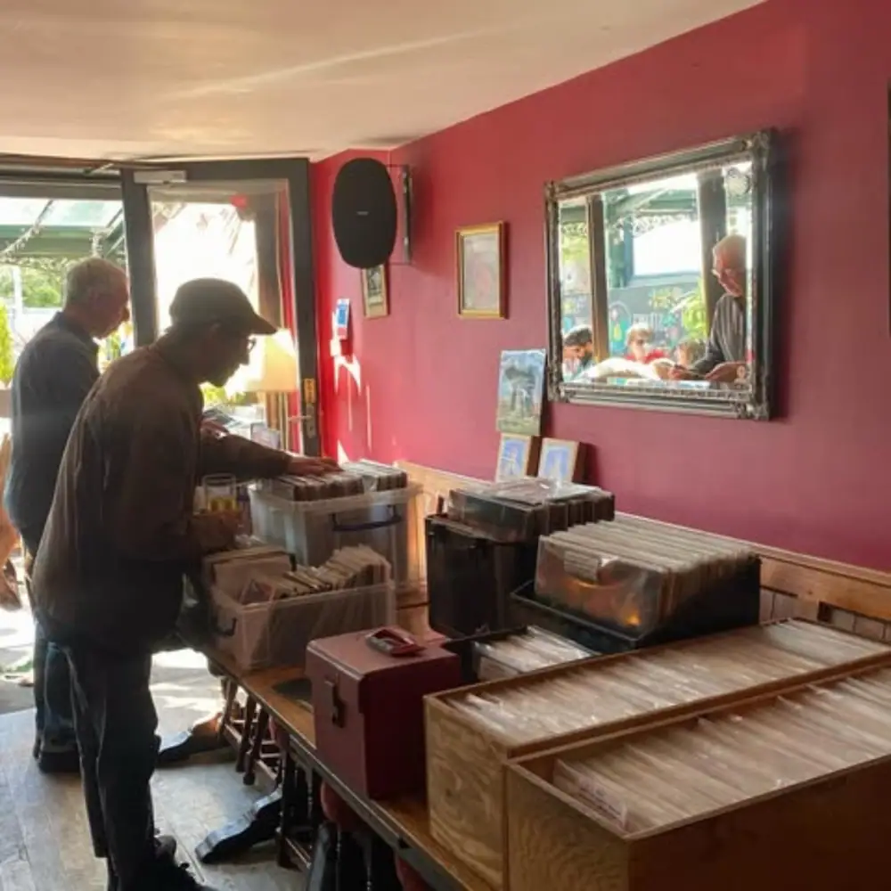
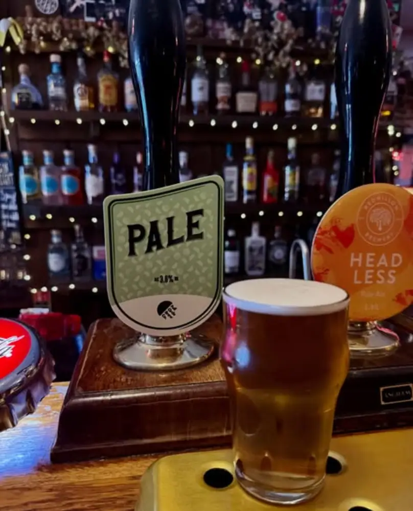
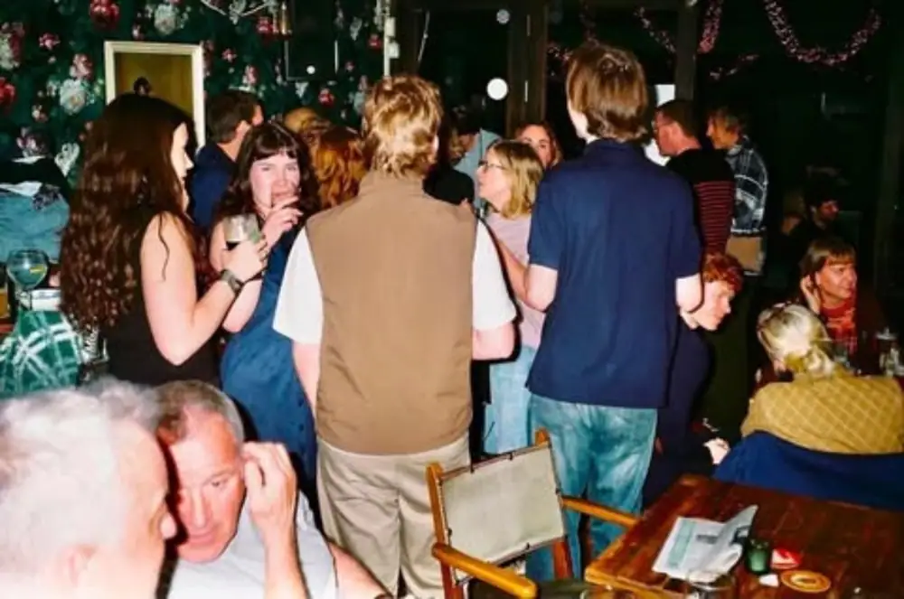
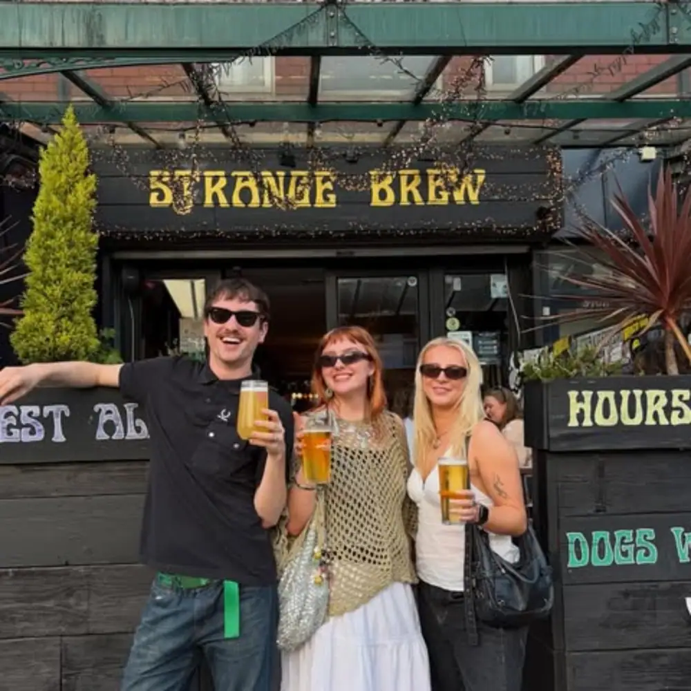

370 Barlow Moor Road · Chorlton
Strange
Brew.
Your neighbourhood bar.
A good place to lose track of the time, not the record.
Local beer, a front patio and records in the red room. Drop by on Barlow Moor Road.

THE BAR / 370 BARLOW MOOR ROAD
BAR / MUSIC / GOOD COMPANYSCROLL TO EXPLORE ↓
01 — THE REGULARS
Put it in rotation.
Some nights are better with a soundtrack. Here's what the venue is known for; check its latest updates before you set off.

Records and the red room at Strange Brew.
01THURSDAYREGULAR*
OPEN DECKS / BRING YOUR OWN VINYL
Bring a record.
Start a conversation.
The regular bring-your-own-records session. Check with the bar for the latest format and start time.
Check this week's details ↗02SATURDAYREGULAR*
THE WEEKEND / VINYL DJs
Leave the playlist
to someone else.
Saturday vinyl sessions are part of the bar's regular programme. Follow the venue for the current line-up.
See the current line-up ↗
* Regular activities documented by CAMRA, not guaranteed dates or confirmed bookings. View the venue listing ↗
02 — BEHIND THE BAR
Something
good on tap.
Ask what's pouring when you get here. The selection changes, with a focus on local beer and plenty of reasons to try something different.
See the latest at the bar ↗
STRANGE BREWDRINKS / NO. 02

Behind
the bar
01Cask aleAsk what's on
02Keg beerRotating selection
03CiderAsk at the bar
03 — MAKE YOURSELF AT HOME
More room than
meets the eye.
Small from the street, with different places to settle in. These are the spaces described in the venue's independent listing.

A busy night inside Strange Brew.
01 / OUTSIDEUp front.
The patio looks out onto Barlow Moor Road. Take a seat and watch Chorlton go by.
↗
02 / INSIDEThe red room.
Head further in to the distinctive red seating area behind the main bar.
↗
03 / OUT BACKWhere it gets loud.
The rear area makes room for live music and longer conversations.
↗
Want to see the real place?Visit the venue's Instagram ↗
04 — SEE YOU THERE
Right here,
in Chorlton.
Strange Brew
370 Barlow Moor Road
Chorlton-cum-Hardy
Manchester M21 8AZ
Near Chorlton Bus Station. Check hours and events with the venue before travelling.

Out front at Strange Brew.
WHEN TO DROP INLISTED HOURS*
Opening
times.
- Monday – Thursday
- 16:00 – 23:00
- Friday
- 16:00 – 00:00
- Saturday
- 14:00 – 00:00
- Sunday
- 14:00 – 23:00
* Third-party hours listed by CAMRA; check with the venue for changes.
Check published hours ↗